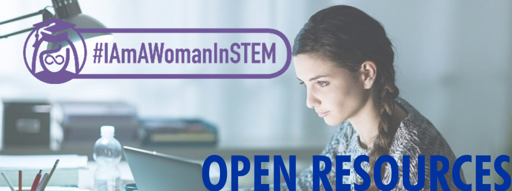

Campus Resources
Use these Campus Resources to better equip yourself as a Woman in STEM!
Louis Stokes Alliances for Minority Participation (LSAMP)
Kentucky Bridge to a Biomedical Doctorate
Organic Chemistry Learning Center
General Chemistry Learning Center
LEAP (Lab for Economics & Accounting Proficiency)
Math Excel (for students enrolled in Calculus I and II), CHE 197 Gen Chem Workshop II
UK Student Chapter of the Association for Women in Mathematics
#IAmAWomanInSTEM In The Press
2018
#IAmAWomanInSTEM Projects, UKNOW (25 January 2018)
2017
#IAmAWomanInSTEM Newsletter, December 2017
8 UK Undergrads Selected for NSF Summer Research Programs, UKNOW (25 August 2017)
UK Students Celebrate Women in STEM, UKNOW (22 February 2017)
#IAmAWomanInSTEM Constitution
CONNECT WITH US